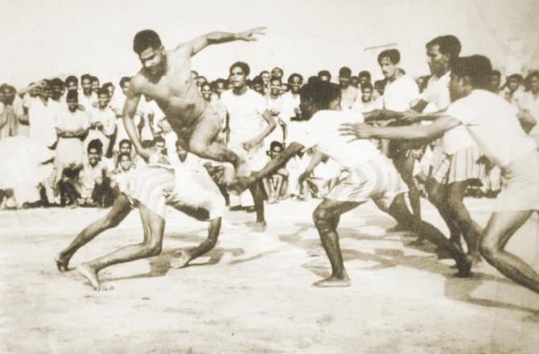

It is believed that the game originated in Ancient TamilNadu
mentioned in Sangam Literature that the game called Sadugudu was practised since ages.
Modern kabaddi is a synthesis of the game played in various forms under different Jallikattu . Kabaddi
In 1950 the All India Kabaddi Federation came into existence and compiled standard rules. The Amateur Kabaddi Federation of India (AKFI) was founded in 1973.
The Asian Kabaddi Federation (AKF) was founded under the chairmanship of kabaddi.
In 1979, a return test between Bangladesh and India was held at different places of India including Mumbai, Hyderabad, and Punjab. The Asian Kabaddi Champion
An attempt to popularise kabaddi in Great Britain was carried out by Channel 4, who commissioned a programme dedicated to the sport. The programme, kabaddi i
In the 1998 Asian games held at Bangkok (Thailand), the Indian kabaddi team clinched the gold medal. The chief coach of the team was former kabaddi player an
In a major upset, seven-time gold medalist India suffered their first-ever loss in 28 years at the 2018 Asian Games to South Korea in the men's Kabaddi group
In 1979, a return test between Bangladesh and India was held at different places of India including Mumbai, Hyderabad, and Punjab.
An attempt to popularise kabaddi in Great Britain was carried out by Channel 4, who commissioned a programme dedicated to the sport.
Standard style
In the international team version of kabaddi, two teams of seven members each occupy opposite halves of a field of 10 by 13 metres (33 ft × 43 ft) in case of
A point is scored for each defender tagged, and a point can also be scored if the raider can step into the area past the territory's bonus line. If the raide
Additional rules are used in the Pro Kabaddi League; if a team has two empty raids in a row, the next raider must score a point on his/her raid or else he/sh
Circle style
Four major forms of kabaddi played in India which are recognised by the amateur federation. In Sanjeevani kabaddi, one player is revived against one player of
the opposite team who is out – one out. The game is played over 40 min with a 5 min break between halves. There are seven players on each side and the team
that outs all the players on the opponent's side scores four extra points. In Gaminee style, seven players play on either side and a player put out has to remain
out until all his team members are out. The team that is successful in ousting all the players of the opponent's side secures a point. The game continues until five
or seven such points are secured and has no fixed time duration. Amar style resembles the Sanjeevani form in the time frame rule. But, a player who is declared out
doesn't leave the court, but instead stays inside, and the play goes along. For every player of the opposition touched “out”, a team earns a point. Punjabi kabaddi
is a variation that is played on a circular pitch of a radius of 22 metres.